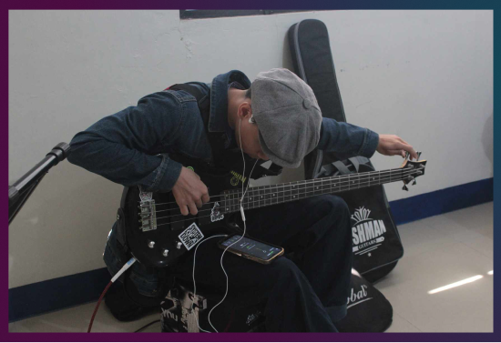
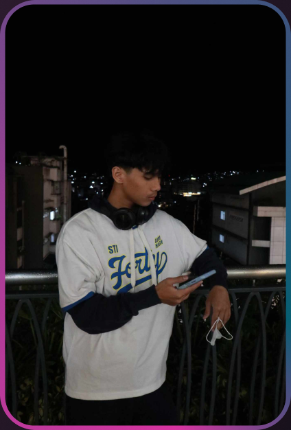
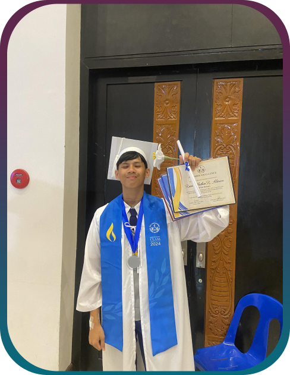
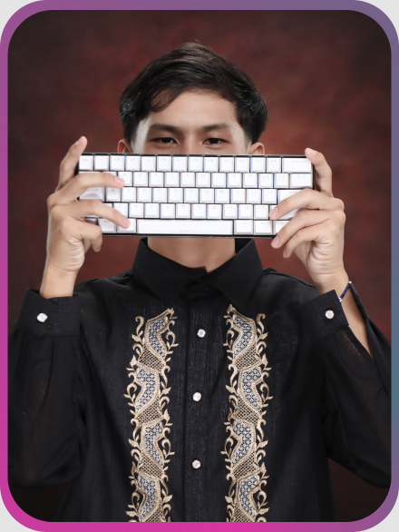

Education
University of Northern Philippines
Bachelor of Science in Computer Science
Third-year student · Currently enrolled

PERSONAL PORTFOLIO
A third-year Bachelor of Science in Computer Science student at the University of Northern Philippines, interested in programming, technology, music, and psychology.
Get to know meBACKGROUND & EXPERIENCE
University of Northern Philippines
Bachelor of Science in Computer Science
Third-year student · Currently enrolled
OJT Assistant
Provincial Information Office of Ilocos Sur
Completed on-the-job training, assisting with tasks assigned by the supervisor.
SELECTED WORK
A programming project focused on organizing customer orders for a local business.
Developed an ordering-list program for a local water refilling station to help organize customer orders and support order management.
A LITTLE ABOUT ME
Whenever I’m alone, a lot of people describe me as gloomy, angry, and hard to approach. But the people who know me would say otherwise. Behind my quiet personality is someone who’s deeply passionate about gaming, music, and psychology.
Despite my interest in psychology, I chose Computer Science because it is familiar to me. I have been writing code since high school, and I want to keep learning and improving in this field.
I enjoy games that pique my interest, especially rhythm, fighting, and RPG games. Outside of gaming, I play bass guitar. I often play Western songs, but I also enjoy the smooth bass lines found in OPM.


LEARNING & GROWTH
Outside of academics, I believe in finding balance and meaning in the little things. Whether through gaming, music, or quiet moments of reflection, I try to live with intention and stay true to who I am.
I aim to keep a calm mind, a cool head, and a healthy balance between school and personal interests. My academic journey is about continuing to learn, growing at my own pace, and doing my best while making the people around me proud.
LOOKING AHEAD
As the world continues to evolve, so do our goals and aspirations. Helping others in person is meaningful, but making a difference through technology can be just as powerful.
With a background in computer science and a growing interest in psychology, I hope to bridge technology and mental health. My dream is to create a platform where people can connect, seek help, and support one another regardless of distance.
By combining the problem-solving skills of technology with empathy, I hope to help create a space where people feel seen, heard, and supported.

LET'S CONNECT
You can reach me through my Facebook profile.
Visit my Facebook